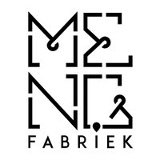
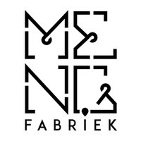

JazzAcademy
Een kijkje in de jazzkookpan van de stad
- Dag
- vrijdag
- Begin
- 19:30
- Einde
- 20:00
- Soort
- Demo
- Locatie
- Mengers
JazzAcademy
JazzAcademy is vijf jaar geleden opgezet door de Bossche trompettist Jeroen Doomernik vanuit de stichting Jazzwerkplaats. Veel jonge muzikanten hebben in de JazzAcademy de kans gekregen om zich verder te ontwikkelen en een aantal heeft hierdoor stappen kunnen maken op weg naar het conservatorium.
De Jazzwerkplaats heeft een puik live-programma van 19:30u tot 00:00u met in het eerste deel optredens van de bands JazzAcademy, KETJAP en het RABO NEXT Stage Jazz Orchestra. In het tweede deel van de avond is er een te gekke afsluitende jazzsessie waarin we veel jonge muzikanten zullen horen en zien die nu ook studeren aan de diverse conservatoria opleidingen.
In de JazzAcademy spelen:
Eva van der Sterren - viool
Bram van der Meijden - altsax
Sijmen Kroot - trompet
Rik Jasker - gitaar
Willem Jansen - piano
Kees ‘on the bass’ van Schijndel - basgitaar
Youri Traa - drums

 Mengers

Mengers

Barkade Da Silva Jazzwerkplaats
In de mengfabriek van Koudys werden vroeger ingrediënten van veevoeder gemengd. Tegenwoordig mengen ondernemers er hun kennis en innovaties, kunstenaars hun verf en dj’s hun plaatjes.

“In de Mengfabriek wordt gewerkt aan een circulaire toekomst zonder uitstoot en afval. Dans, muziek, kunst en feest maken daar met klem deel van uit. Samenwerken is hier het motto, wat heb jij in te brengen?”

Waar dan?